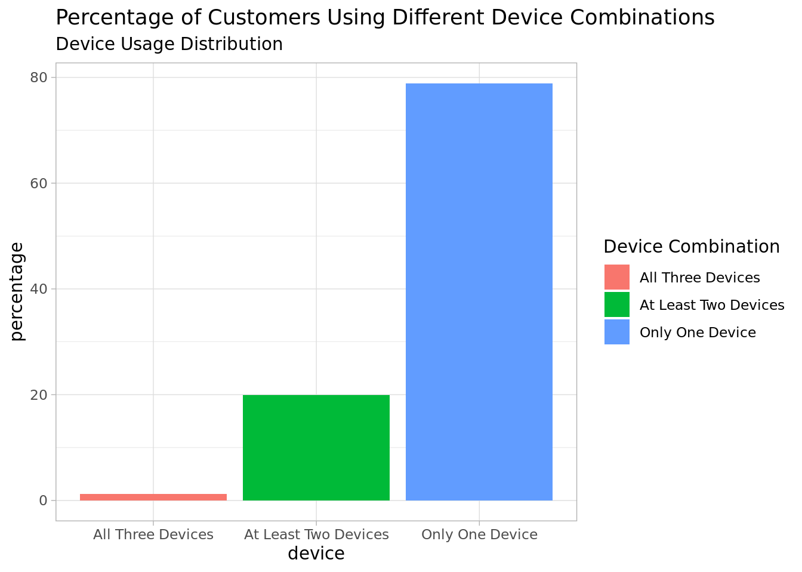
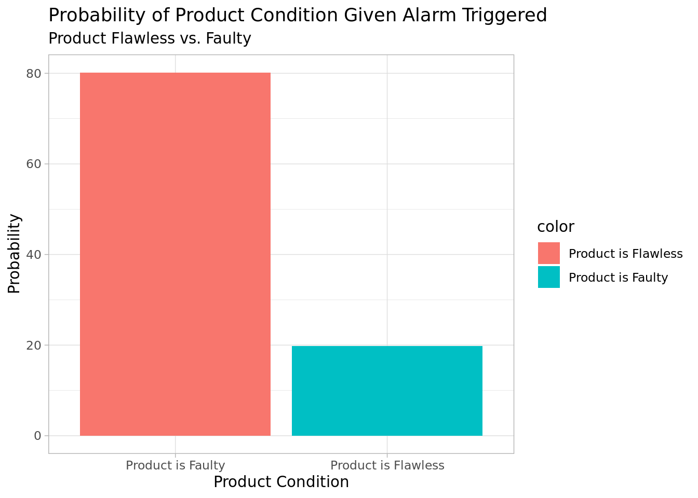

graph LR;
classDef teal fill:teal;
classDef orange fill:orange;
Start((" O ")) --> |0.3| Option1(("S"))
Start -->|0.7| Option2(("~S"))
Option1 -->|0.2| SubOption1(("T"))
SubOption1 -->|"P(S ∩ T)"| Final1[0.06]
Option1 -->|0.8| SubOption2(("~T"))
SubOption2 -->|"P(S ∩ ~T)"| Final2[0.24]
Option2 -->|0.6| SubOption3(("T"))
SubOption3 -->|"P(~S ∩ T)"| Final3[0.42]
Option2 -->|0.4| SubOption4(("~T"))
SubOption4 -->|"P(~S ∩ ~T)"| Final4[0.28]
class Option1 teal;
class SubOption1 orange;
class Option2 teal
class SubOption2 orange
class SubOption3 orange
class SubOption4 orange
Probability Theory
1 Assignment 1
Problem
Define being on time as event T , being not on time as~T and having a change in scope as S and having no change in scope as ~S
Probability Tree
Code Snippet
code in R
Solving Conditional Events in R give p_S , p_T_given_S, p_T_given_not_S
# Define the probabilities
p_S <- 0.3 # Probability of Change in Scope
p_T_given_S <- 0.2 # Probability of Being On Time given Change in Scope
p_T_given_not_S <- 0.6 # Probability of Being On Time given No Change in Scope
# Calculate the probabilities of combined events
p_S_and_T <- p_S * p_T_given_S
p_S_and_not_T <- p_S * (1 - p_T_given_S)
p_not_S_and_T <- (1 - p_S) * p_T_given_not_S
p_not_S_and_not_T <- (1 - p_S) * (1 - p_T_given_not_S)
# Calculate the total probability
total_prob <- p_S_and_T + p_S_and_not_T + p_not_S_and_T + p_not_S_and_not_T
# Create a table of probabilities
prob_table <- data.frame(
Event = c("S and T", "S and ~T", "~S and T", "~S and ~T", "Total"),
Probability = c(p_S_and_T, p_S_and_not_T, p_not_S_and_T, p_not_S_and_not_T, total_prob)
)
print(prob_table)#> Event Probability
#> 1 S and T 0.06
#> 2 S and ~T 0.24
#> 3 ~S and T 0.42
#> 4 ~S and ~T 0.28
#> 5 Total 1.00#> [1] "Total Probability: 1"2 Assignment 2
Problem
Using the Venn diagram above, answer the following questions.
What is the percentage of customers using all three devices?
What is the percentage of customers using at least two devices?
What is the percentage of customers using only one device?
# Define probabilities for using devices
p_s <- 0.423
p_t <- 0.278
p_c <- 0.1
# Calculate probability of using all three devices
p_stc <- p_s * p_t * p_c
# Calculate probability of using at least two devices
p_at_least_two <- p_stc + p_s * p_t + p_s * p_c + p_t * p_c
# Calculate probability of using only one device
p_one <- 1 - (p_stc + p_at_least_two)
cat('Percentage of customers using all three devices:', round(100 * p_stc, 2), '%\n')#> Percentage of customers using all three devices: 1.18 %#> Percentage of customers using at least two devices: 19.95 %#> Percentage of customers using only one device: 78.88 %library(ggplot2)
# Define probabilities for using devices
p_s <- 0.423
p_t <- 0.278
p_c <- 0.1
# Calculate probability of using all three devices
p_stc <- p_s * p_t * p_c
# Calculate probability of using at least two devices
p_at_least_two <- p_stc + p_s * p_t + p_s * p_c + p_t * p_c
# Calculate probability of using only one device
p_one <- 1 - (p_stc + p_at_least_two)
device_usage <- data.frame(
device = c('All Three Devices', 'At Least Two Devices', 'Only One Device'),
count = c(p_stc, p_at_least_two, p_one)
)
device_usage$percentage <- device_usage$count * 100
ggplot(device_usage, aes(x = device, y = percentage, fill = device)) +
geom_bar(stat = "identity") +
theme_light() +
scale_fill_discrete(labels = c('All Three Devices', 'At Least Two Devices', 'Only One Device')) +
labs(
title = "Percentage of Customers Using Different Device Combinations",
subtitle = "Device Usage Distribution",
fill = "Device Combination"
)
3 Assignment 3
Problem
- P({A}|B)(1)
- P(A|B)(2) and fill the gaps in the following sentence:
These results show that in case the alarm is triggered, there is a possibility of about % that the product is flawless and a probability of % that the product is faulty.
# Define probabilities
p_a <- 0.04
p_b_given_a <- 0.97
p_b_given_not_a <- 0.01
# Calculate probabilities of product being flawless and faulty given alarm triggered
p_not_a_given_b <- (p_b_given_not_a * (1 - p_a)) / (p_b_given_a * p_a + p_b_given_not_a * (1 - p_a))
p_a_given_b <- (p_b_given_a * p_a) / (p_b_given_a * p_a + p_b_given_not_a * (1 - p_a))
product_condition <- c('Product is Flawless', 'Product is Faulty')
probabilities <- c(p_not_a_given_b * 100, p_a_given_b * 100)
colors <- c('skyblue', 'coral')
product_condition_probabilities <- data.frame(
product_condition = product_condition,
probability = probabilities,
color = colors
)
print(data.frame(product_condition=product_condition,probability = probabilities))#> product_condition probability
#> 1 Product is Flawless 19.83471
#> 2 Product is Faulty 80.16529ggplot(product_condition_probabilities, aes(x = product_condition, y = probability, fill = color)) +
geom_bar(stat = "identity") +
theme_light() +
scale_fill_discrete(labels = c('Product is Flawless', 'Product is Faulty')) +
labs(
title = "Probability of Product Condition Given Alarm Triggered",
subtitle = "Product Flawless vs. Faulty",
x = "Product Condition",
y = "Probability"
)
Solution
These results show that in case the alarm is triggered, there is a possibility of about 19.83471% that the product is flawless and a probability of 80.16529% that the product is faulty.